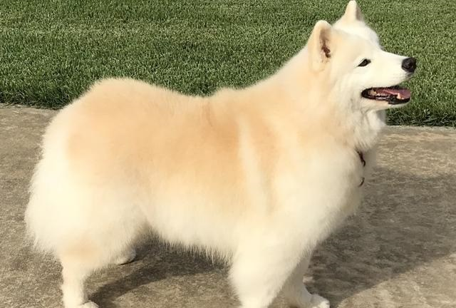
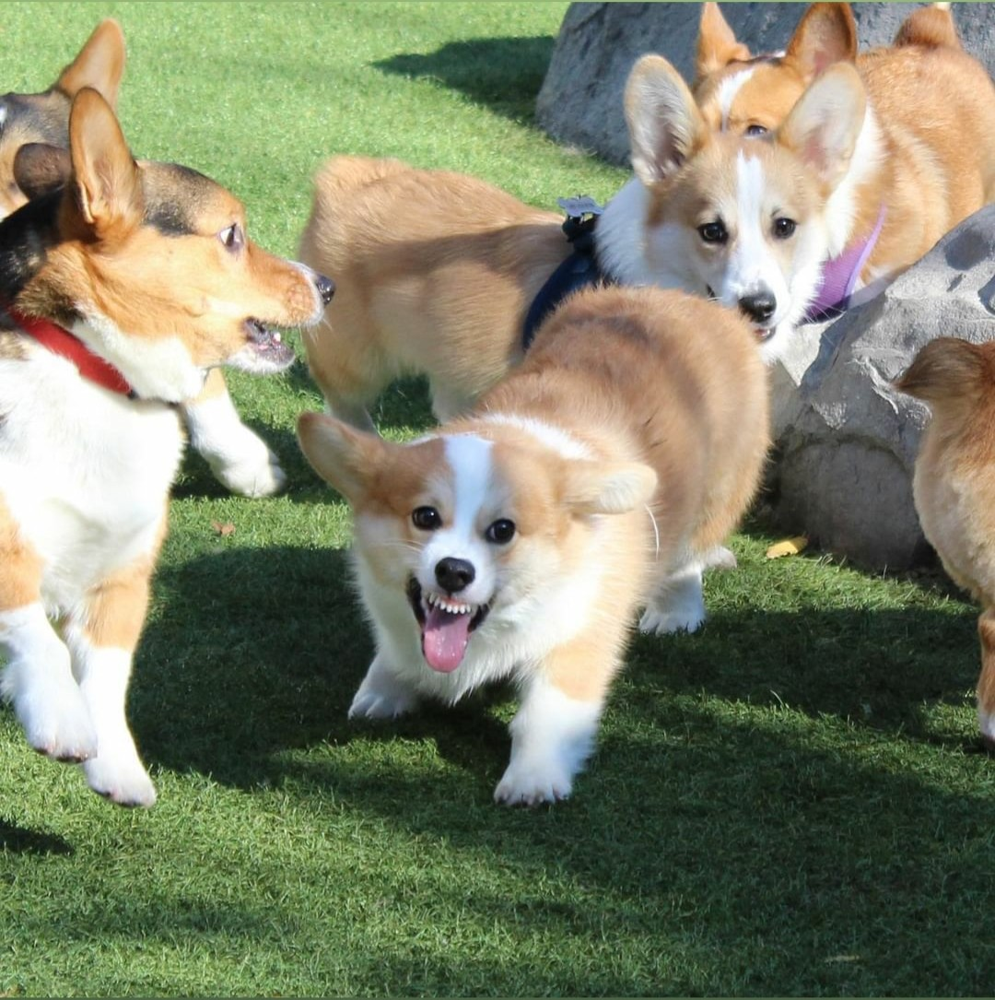
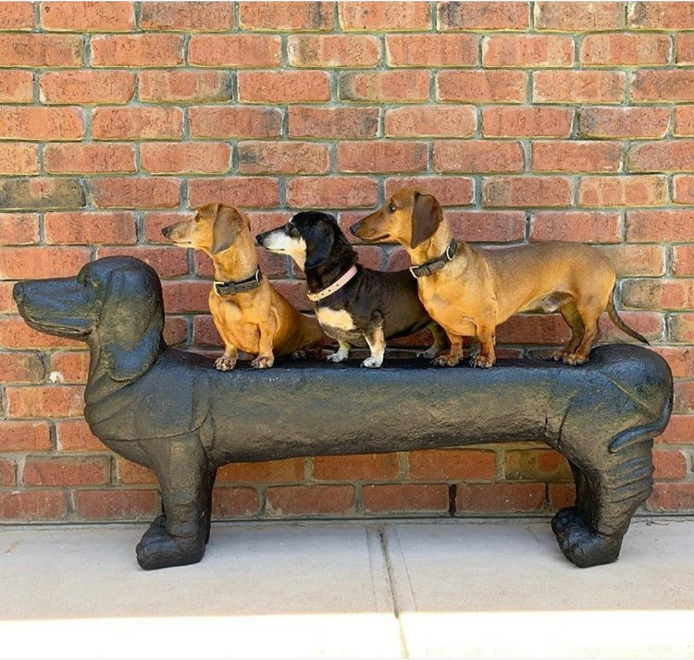
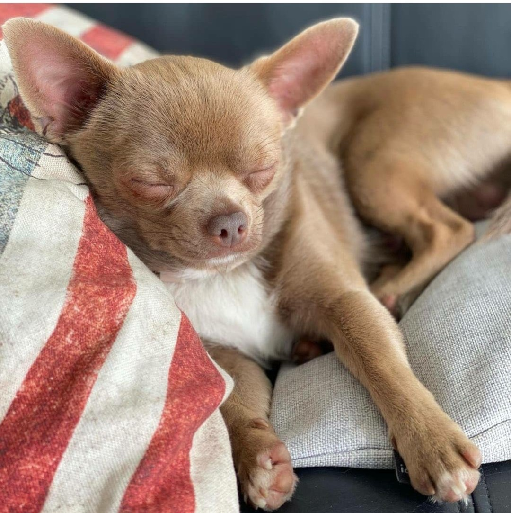
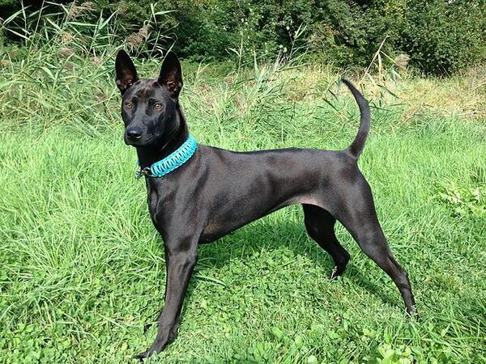
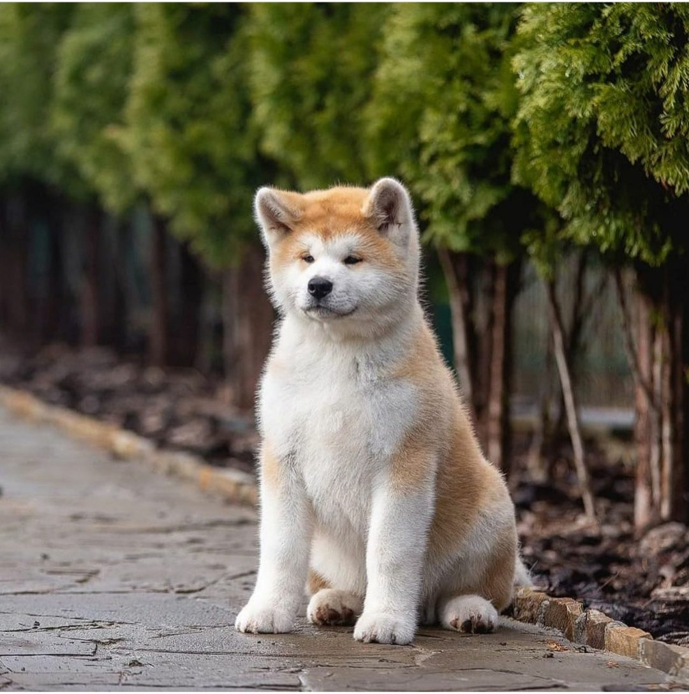
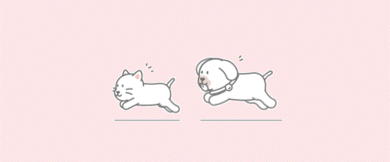

Những người bạn bốn chân
"Bạn thích sự năng động?"
"Bạn thích cảm giác luôn có người chờ mình khi trở về nhà?"
Vậy hãy thử xem qua những "người bạn" đáng yêu và trung thành này nhé!
 Husky
Husky
- Lông:
- Dày, chịu được cái lạnh từ -50 đến -60°C
- Đen-trắng, nâu (đỏ)-trắng, xám-trắng, trắng, Agouti.
- Màu mắt:
- Xanh da trời, xanh nước biển, màu hổ phách, xanh lá cây, hoặc nâu.
- Có thể có 2 mắt với mỗi mắt là một màu khác nhau.
- Mũi:
- Mũi có màu đen, nâu, đỏ xẫm, xám nhạt.
- Kích thước:
- Cân nặng
- Đực: 20 - 27kg
- Cái: 16 - 23kg
- Chiều cao
- Đực: 53 – 58cm
- Cái: 51 – 56cm
- Cân nặng
- Tính cách:
- Là giống chó thân thiện với trẻ em, tăng động.
Nguồn tham khảo.
Shiba Inu
- Màu lông:
- Màu đỏ, đen và nâu, hoặc màu vừng (màu đỏ với những sợi ngã sang đen)
- Kích thước:
- Cân nặng
- Đực: 10kg
- Cái: 8kg
- Chiều cao
- Đực: 35 – 43cm
- Cái: 33 – 41cm
- Cân nặng
- Tính cách:
- Tính tự lập và đôi khi hung hăng.
- Tương tác khá tốt với mèo, trung thành.
- Một số bệnh thường gặp ở Shiba Inu: dị ứng, thanh quang nhãn, cườm thủy tinh thể mắt, loạn sản xương hông, quặp và trật xương bánh chè. Nguồn tham khảo.

Samoyed
- Màu lông:
- Màu vàng
- Trắng
- Kem và hơi hung vàng
- Kích thước:
- Cân nặng
- Đực: 20 – 30kg
- Cái: 16 – 20kg
- Chiều cao
- Đực: 51 – 56cm
- Cái: 46 – 51cm
- Cân nặng
- Tính cách:
- Rất thông minh, ưa yên ổn.
- Mạnh mẽ, năng nổ và rất linh hoạt.
- Thân thiện và thích chơi đùa.
- Một số bệnh thường gặp ở Samoyed: các bệnh về máu, tiểu đường và có nguy cơ bị dị ứng da. Nguồn tham khảo.

Corgi
- Màu lông:
- Corgi Cardigan Welsh
- Màu đỏ – trắng, xanh nhạt, xám, đen trắng, tricolor giống Pembroke Welsh Corgi.
- Pembroke Welsh Corgi
- Màu đỏ-trắng.
- Chó Corgi màu tricolor đa phần thường mang màu đỏ, đen, vàng
- Corgi Cardigan Welsh
- Đuôi:
- KKhông được dài hơn 2 inch (5 cm).
- Việc cắt đuôi đã bị coi là bất hợp pháp.
- Kích thước:
- Chiều cao: 25-30cm và cân nặng từ 9-13kg.
- Tính cách:
- Là một giống chó sống rất tình cảm, thích tham gia vào các hoạt động trong gia đình và thường có xu hướng đi theo chủ, cực kì năng động.
- Một số bệnh hay gặp ở Corgi: Bệnh tổn thương cột sống, bệnh nấm, ghẻ, bọ chét trên da, bệnh béo phì,… Nguồn tham khảo.

Dachshund
- Màu lông: lông mượt, lông ngắn và lông dài
- Có màu lông vàng hoặc nâu đỏ.
- Dachshunh lông mướt là giống thuần chủng.
- Dachshund lông dài là kết quả của sự đột biến gien và lai tạo có chọn lọc với giống chó Đức Spaniel.
- Dachshund lông ngắn là sự kết hợp giữa Dachshund thuần chủng, Schnauzers, và Dandie Dinmont Terriers.
- Kích thước:
- Trung bình: 16 - 32 pounds
- Nhỏ: dưới 11 pounds
- Tính cách:
- Rất thông minh, trung thành.
- Một số bệnh hay gặp ở Duchshund: bệnh đĩa xương sống, bệnh về tim, đái đường và béo phì. Nguồn tham khảo.

Chihuahua
- Lông
Hai loại: lông ngắn, lông dài.- Màu vàng cát, Nâu hạt dẻ, Màu bạc, Nâu nhạt
- Kích thước:
- Cân nặng: 1.8 – 2.7kg
- Chiều cao: 15 – 25cm
- Tính cách:
- Can đảm, cực kỳ sống động, kiêu hãnh và mạnh dạn.
- là loại chó khá hung hăng.
- Một số bệnh thường gặp ở Chihuahua: bệnh màng sừng tuyến lệ hay đục thủy tinh thể thứ cấp, dễ bị ngạt thở bởi dây xích cổ, dễ mắc các bệnh về răng lợi, thấp khớp, không chịu được lạnh, dễ bị căng thẳng, béo phì, dễ bị gãy xương. Nguồn tham khảo.
Golden Retriever
- Màu lông:
- Vàng kem đến vàng nâu
- Màu đỏ không được công nhận
- Kích thước:
- Cân nặng:
- Đực: 29 – 34kg
- Cái: 25 – 29kg
- Chiều cao:
- Đực: 56 – 61cm
- Cái: 51 – 56cm
- Cân nặng:
- Tính cách:
- Ưa hoạt động, chơi đùa.
- Rất trung thành và thông minh.
- Dễ dạy dỗ và luôn tỏ ra kiên nhẫn và dịu dàng đối với trẻ nhỏ.
Nguồn tham khảo.

Chó Phú Quốc
- Màu lông:
- 4 màu cơ bản gồm đốm, đen, vàng và vện (sọc)
- Ngày nay màu lông đã có nhiều sự lai tạp.
- Lông mượt sát (1–2 cm) rất ngắn.
- Kích thước:
- Cân nặng:
- Đực: 15 – 20kg
- Cái: 12 – 18kg
- Chiều cao:
- Đực: 50 – 55cm
- Cái: 48 – 52cm
- Cân nặng:
- Tính cách:
- Là giống chó săn rất giỏi.
- Rất trung thành và thông minh.
Nguồn tham khảo.

Akita Inu
- Màu lông:
- Màu trắng tuyền, đỏ, màu hạt vừng và vằn vện.
- Màu đen không được chấp nhận.
- Kích thước:
- Cân nặng – Akita Inu
- Đực: 27 – 42kg
- Cái: 25 – 36kgs
- Chiều cao – Akita Inu
- Đực: 64 – 69cm
- Cái: 58 – 64cm
- Cân nặng – Akita Inu
- Tính cách:
- Ngoan ngoãn, dễ bảo, nhưng đôi khi cũng tỏ ra cứng đầu.
- Thông minh.
- Một số bệnh thường gặp: các bệnh về máu, hệ miễn dịch, bệnh ngoài da, mắt. Nguồn tham khảo.
"Nếu bạn là người thích cảm giác theo đuổi người khác
thì sao không thử ghé xem các em Meow của page nèo ~"
Đến trang Meow!
